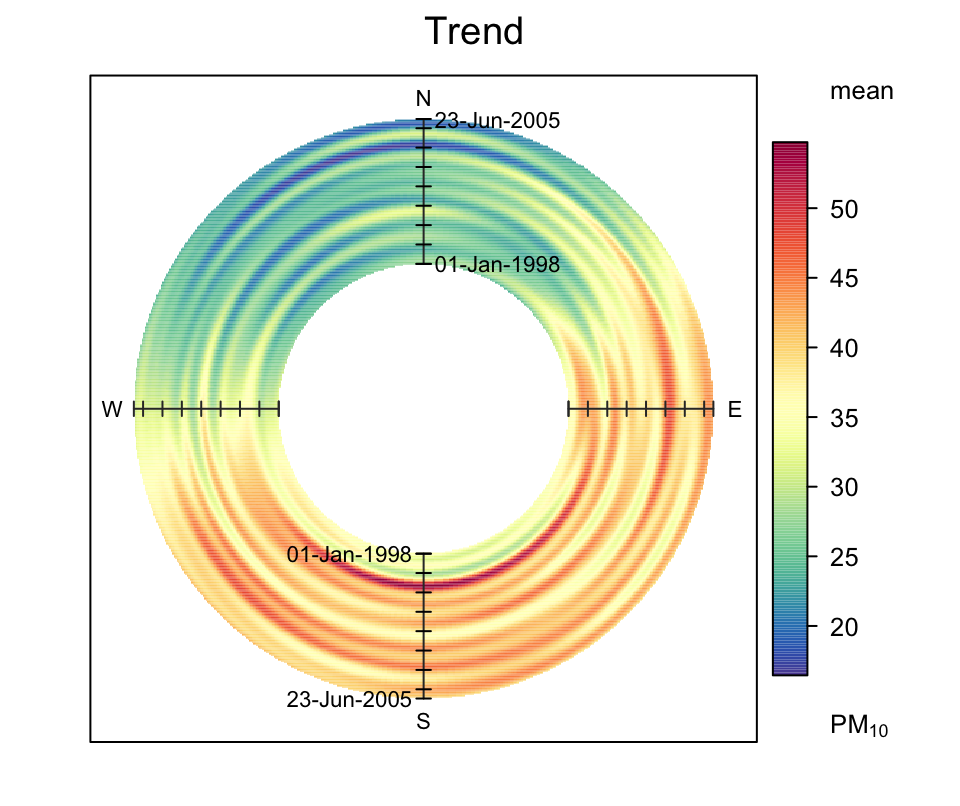
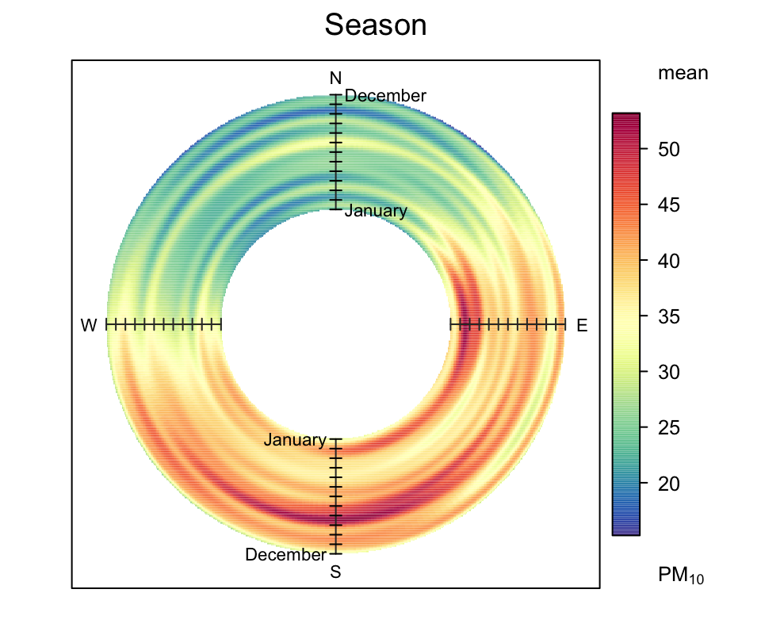
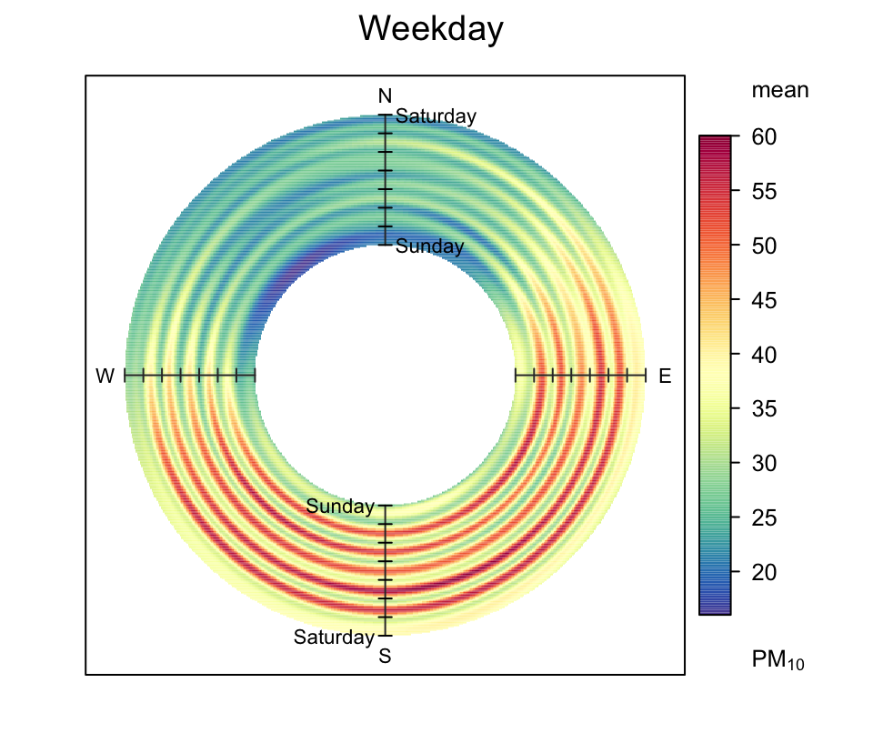
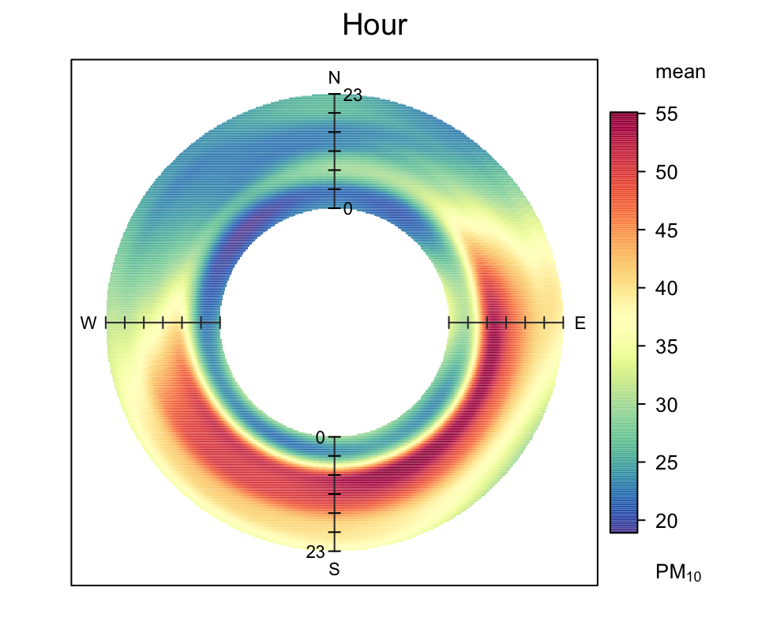

## wind speed >2
polarAnnulus(filter(mydata, ws > 2),
pollutant = "pm10",
type = "hour")
## wind speed > 10th percentile
polarAnnulus(filter(
mydata,
ws > quantile(ws, probs = 0.1, na.rm = TRUE)
),
pollutant ="pm10",
type = "hour")9 Polar annulus
9.1 Purpose
The polarAnnulus function provides a way in which to consider the temporal aspects of a pollutant concentration by wind direction. This is another means of visualising diurnal, day of week, seasonal and trend variations. Plotting as an annulus, rather than a circle avoids to some extent the difficulty in interpreting values close to the origin. These plots have the capacity to display potentially important information regarding sources; particularly if more than one pollutant is available.
9.2 Example of use
We apply the four variations of the polarAnnulus plot to PM10 concentrations at Marylebone Road. Figure 9.1 shows the different temporal components. Similar to other analyses for PM10, the trend plot show that concentrations are dominated by southerly winds and there is little overall change in concentrations from 1998 to 2005, as shown by the red colouring over the period. The seasonal plot shows that February/March is important for easterly winds, while the summer/late summer period is more important for southerly and south-westerly winds. The day of the week plot clearly shows concentrations to be elevated for during weekdays but not weekends — for all wind directions. Finally, the diurnal plot highlights that higher concentrations are observed from 6 am to 6 pm.
Interestingly, the plot for NOx and CO (not shown, but easily produced) did not show such a strong contribution for south-easterly winds. This raises the question whether the higher particle concentrations seen for these wind directions are dominated by different sources (i.e. not the road itself). One explanation is that during easterly flow, concentrations are strongly affected by long-range transport. However, as shown in the diurnal plot in Figure 9.1, the contribution from the south-east also has a sharply defined profile — showing very low concentrations at night, similar to the likely contribution from the road. This type of profile might not be expected from a long-range source where emissions are well-mixed and secondary particle formation has had time to occur. The same is also true for the day of the week plot, where there is little evidence of ‘smeared-out’ long-range transport sources. These findings may suggest a different, local source of PM10 that is not the road itself. Clearly, a more detailed analysis would be required to confirm the patterns shown; but it does highlight the benefit of being able to analyse data in different ways.
library(openair) # load openair
polarAnnulus(mydata,
pollutant = "pm10",
period = "trend",
main = "Trend")
polarAnnulus(mydata,
pollutant = "pm10",
period = "season",
main = "Season")
polarAnnulus(mydata,
pollutant = "pm10",
period = "weekday",
main = "Weekday")
polarAnnulus(mydata,
pollutant = "pm10",
period = "hour",
main = "Hour")



polarAnnulus function applied to Marylebone Road.Where there is interest in considering the wind direction dependence of concentrations, it can be worth filtering for wind speeds. At low wind speed with wind direction becomes highly variable (and is often associated with high pollutant concentrations). Therefore, for some situations it might be worth considering removing the very low wind speeds. The code below provides two ways of doing this using the dplyr filter function. The first selects data where the wind speed is >2 m s-1. The second part shows how to select wind speeds greater than the 10th percentile, using the quantile function. The latter way of selecting is quite useful, because it is known how much data are selected i.e. in this case 90%. It is worth experimenting with different values because it is also important not to lose information by ignoring wind speeds that provide useful information.